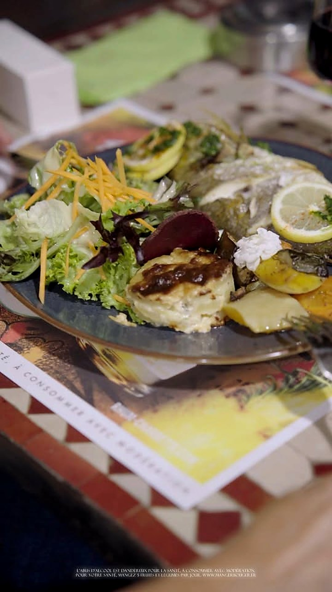
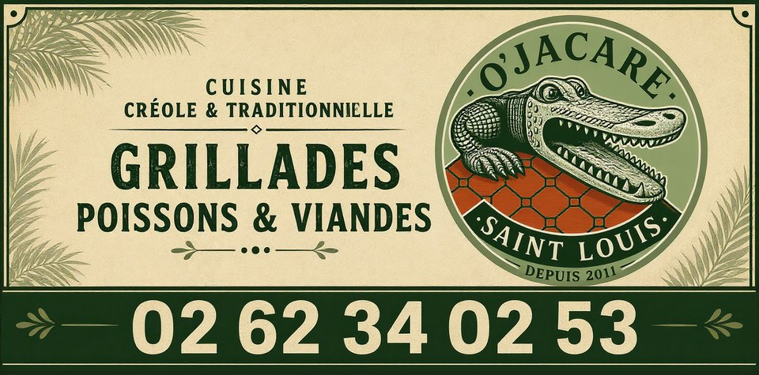
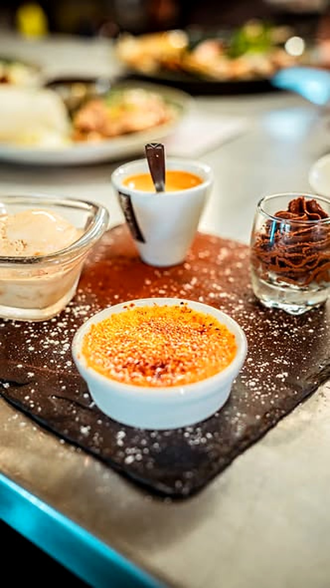
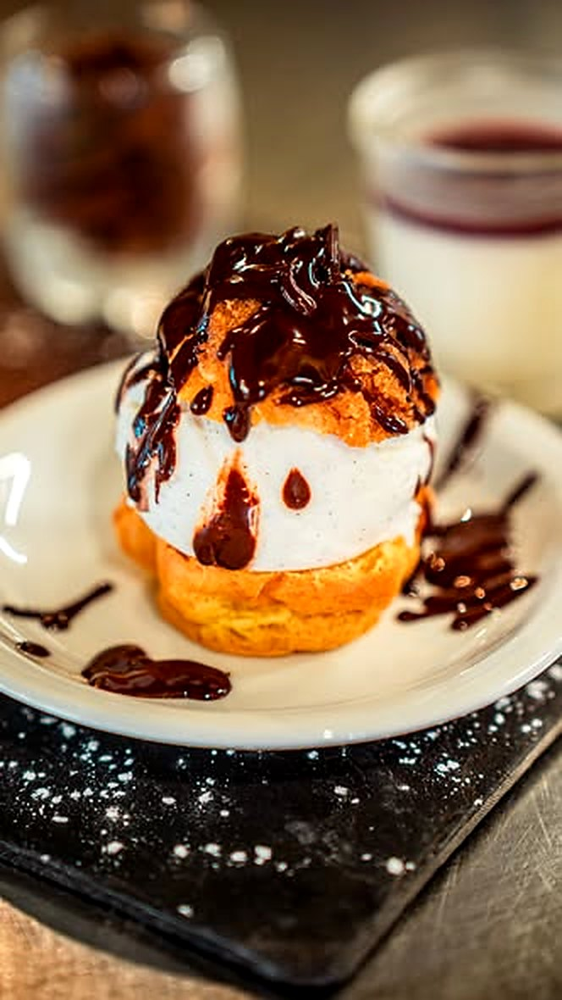
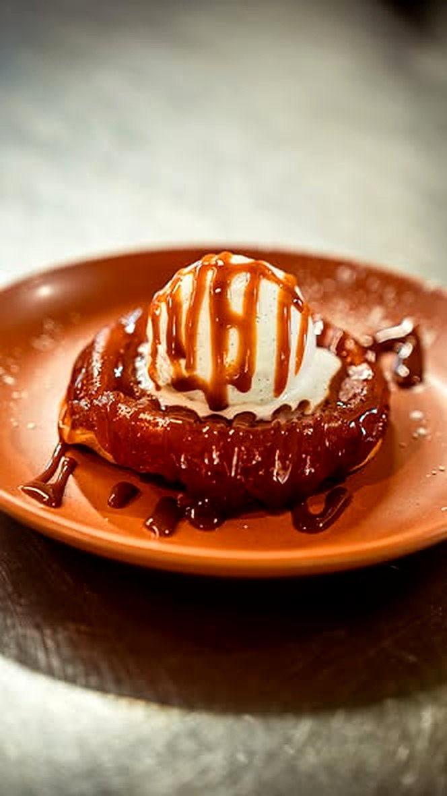
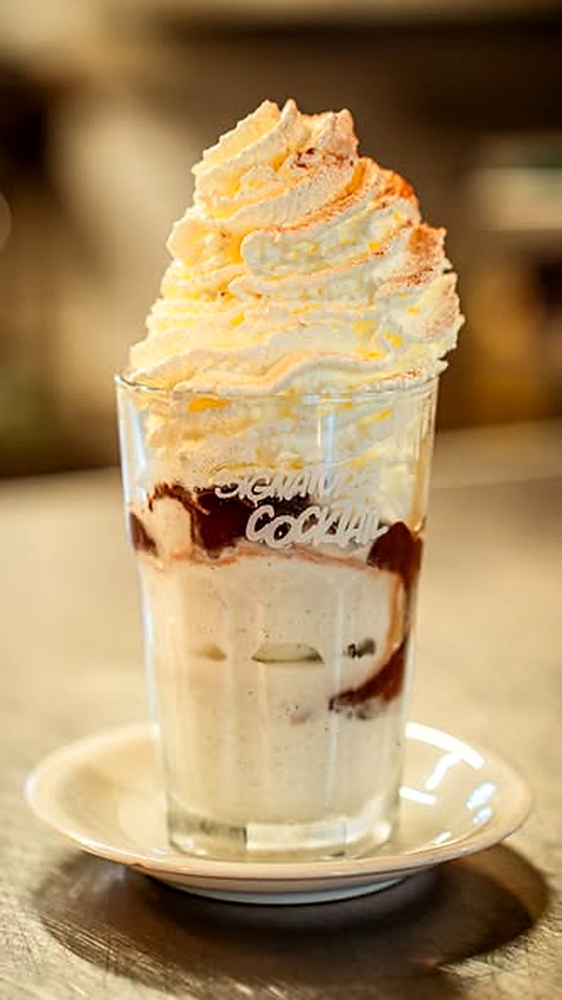
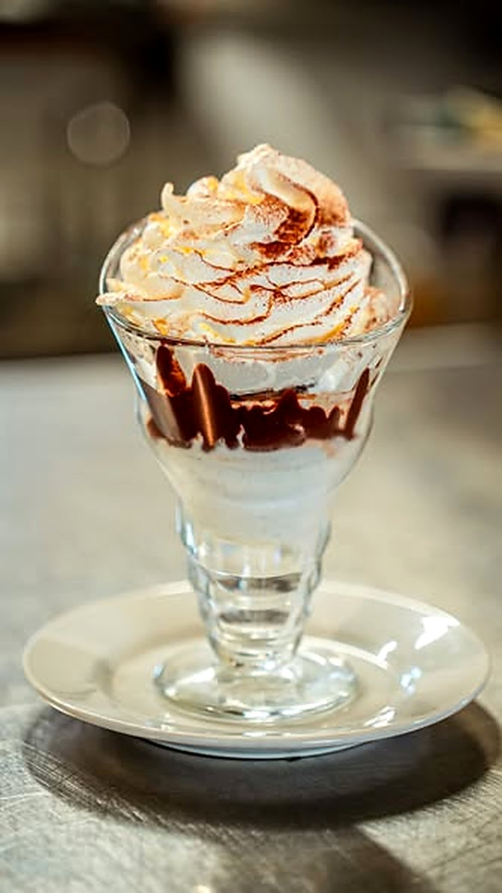

Cuisine créole & traditionnelle · Saint-Louis
Des grillades généreuses, des poissons et des viandes préparés avec passion.
Au cœur de Saint-Louis

La maison
Une ambiance chaleureuse, pour un déjeuner entre amis ou un dîner en amoureux : un cadre convivial, pensé pour se sentir comme à la maison.
Le crocodile du logo veille sur la rue François de Mahy. On y choisit sa place sur la terrasse ombragée ou dans la salle climatisée, puis on se laisse porter par une carte qui voyage entre inspirations créoles et cuisine plus classique.
Les portions sont copieuses, les plats du jour proposés à prix doux, et l’accueil se fait avec le sourire.

Un peu de douceur
« Parce qu’un bon repas mérite toujours une belle fin… Découvrez quelques-unes de nos douceurs du moment à savourer après votre repas. » Publication de la page Facebook d’O’Jacaré · « Un peu de douceur chez O’Jacaré »





Ils en parlent
Note publique relevée sur Google Maps ; prix et horaires d’après le Petit Futé.
Venir